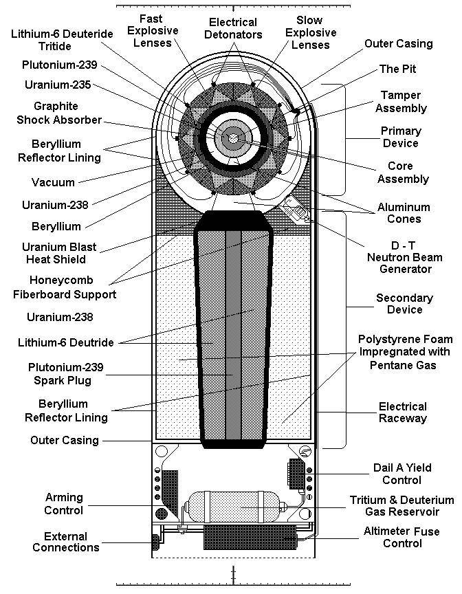

A Bomb to Trigger a Bomb
A thermonuclear weapon, or hydrogen bomb, is vastly more powerful than a simple fission bomb. The secret to its power lies in a clever sequence: it uses the energy from an initial fission explosion to trigger a much larger fusion explosion. It’s a chain reaction on an entirely different scale.

Stage 1: The Primary (Fission)
The process starts at the top of the casing with the "primary." This is a sophisticated implosion-type fission bomb, much like the "Fat Man" device. When its conventional explosives fire, they crush a plutonium core, setting off a fission reaction. But its main purpose isn't just the blast—it’s to release an unbelievable flood of high-energy X-rays in the first nanoseconds of the explosion.
Stage 2: The Secondary (Fusion)
These X-rays fill the weapon's casing, which acts like a microwave oven. They instantly turn a special polystyrene foam into a hot plasma that focuses the radiation onto the "secondary" device. This immense wave of energy vaporizes the outer layer of the secondary, creating an inward pressure that is millions of times stronger than the explosives used in a fission bomb. This process is called "radiation implosion."
This staggering pressure crushes the secondary's core, which contains fusion fuel (like Lithium-6 Deuteride) and a central plutonium "spark plug." The compression makes the spark plug go critical and fission, which in turn heats the fusion fuel to millions of degrees—hot enough to ignite a massive fusion reaction. For good measure, the neutrons released from this fusion reaction cause the bomb's uranium casing to also undergo fission, adding a final, dirty kick to the bomb's total destructive power.